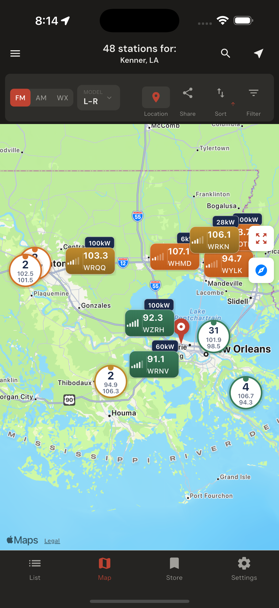
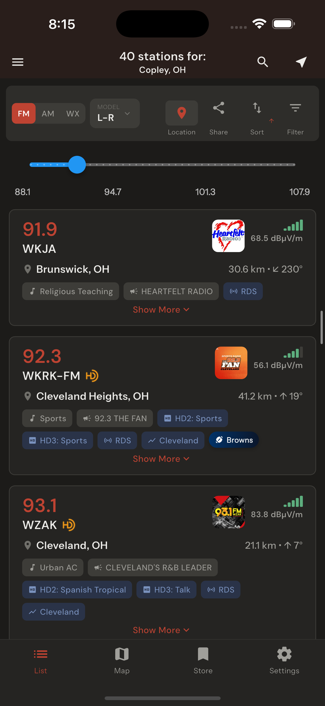
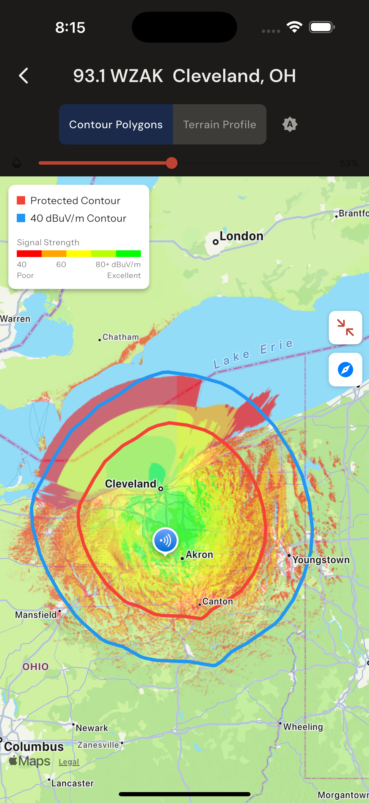
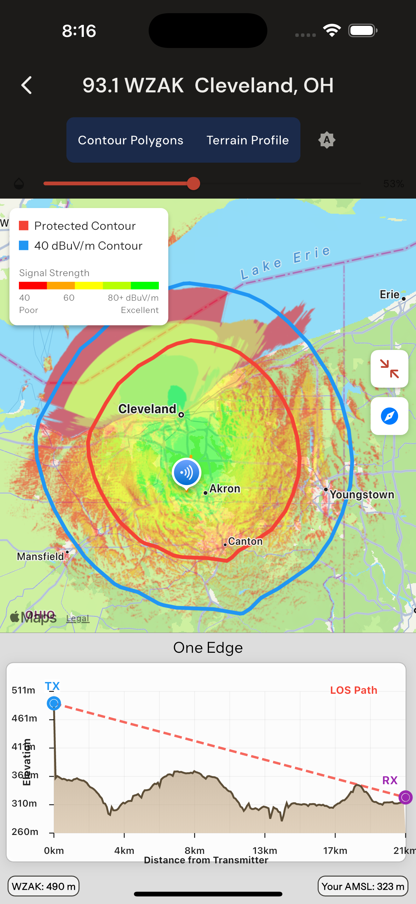
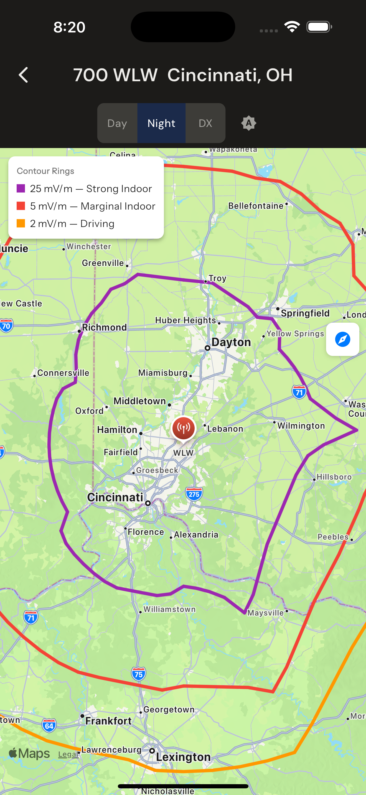
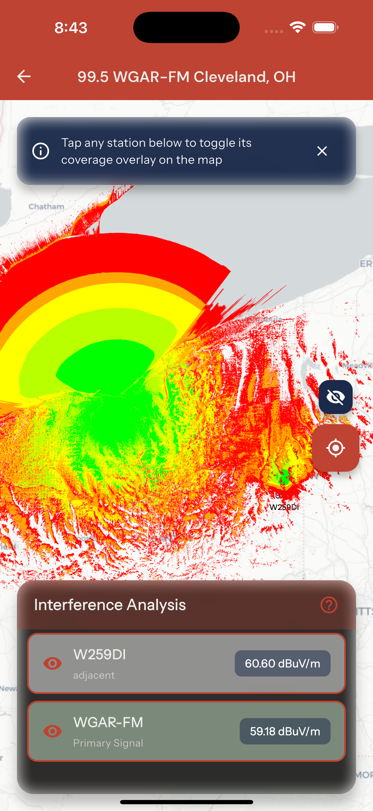
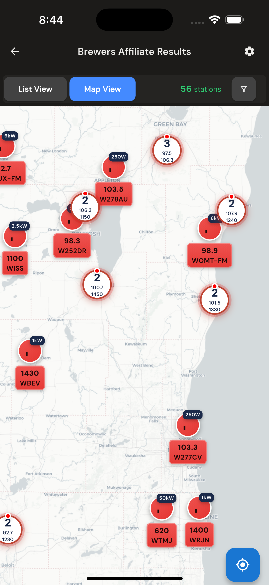
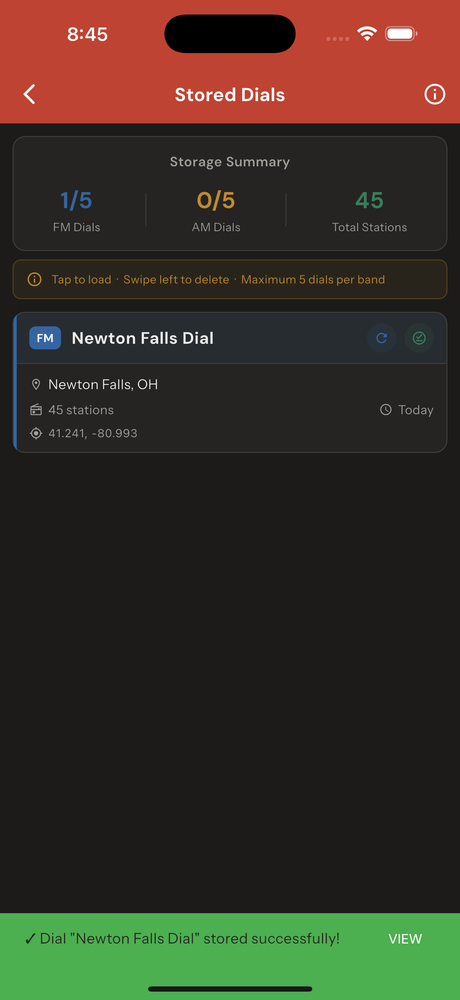

Signal Analysis & Station Discovery
RadioLand 2.0 applies Longley-Rice terrain propagation modeling to FM, AM and NOAA Weather Radio stations across North America, Bermuda and the Caribbean, and shows the math behind every result.
Overview
RadioLand 2.0 is a radio station discovery and signal analysis application for iOS and Android. The app draws on FCC license data and applies the Longley-Rice irregular terrain model — the same methodology used by engineers and regulators for decades — to calculate expected FM, AM and NOAA Weather Radio reception for a given location. Coverage spans the United States, Canada, Mexico, Bermuda and the Caribbean.
Rather than displaying static service contours, the app calculates signal propagation over actual terrain and presents results on an interactive map, color-coded from poor to excellent. The list view shows each station's predicted field strength in dBµV/m, distance and bearing from the user's position, and metadata including format, slogan, HD Radio subchannel formats and network affiliations.
FCC protected service contour and 40 dBµV/m field strength contour overlays rendered over terrain. Signal strength is color-coded across the full coverage footprint.
Separate day and nighttime maps account for groundwave propagation and skywave skip. A DX mode extends the nighttime calculation to long-distance reception paths.
An elevation cross-section between the user's receive point and each transmitter site identifies obstacles in the signal path. Receiver height above ground level is adjustable.
Overlays multiple stations' coverage areas simultaneously and identifies co-channel and adjacent-channel conflicts — a tool suited to both DXers and engineers.
Station listings include NFL, MLB, NBA and NHL network affiliations. Affiliate maps show the full broadcast footprint for any major-league team's radio network.
HD2, HD3 and HD4 subchannel formats and slogans are displayed inline in the station list and in the subchannel detail popup.
All NOAA Weather Radio transmitters are included with the same terrain-based signal prediction applied to FM and AM stations.
Up to five FM and five AM station sets can be saved by location, with coordinates and station count preserved. PDF export is available.
Search by location, frequency, call sign, sports team affiliation or radio market. Results display in list or map view; map view clusters stations by signal strength.
Propagation Models
The app offers two propagation models, selectable from the toolbar. For AM, day coverage uses FCC standard groundwave methodology. Night coverage applies skywave calculations with contours at 25, five and two millivolts per meter, corresponding to strong indoor, marginal indoor and driving reception. DX mode extends the calculation to long-distance skywave paths.
The default. Industry-standard irregular terrain model developed by the Institute for Telecommunication Sciences, used by engineers and regulators since the 1960s.
A machine-learning approach trained on terrain and propagation data. Offers an alternative prediction, particularly useful in hilly terrain where Longley-Rice can overestimate coverage.
Origins
RadioLand began as a master's thesis in Software Engineering at Villanova University. Langan, a New Jersey native who had been FM DXing for more than 15 years and held an amateur radio license as W2NJL, set out to build what he had always wanted: an accurate, location-based listing of receivable radio stations for any point in North America.
The project launched for iOS and Android in February 2022. The thesis earned second place at Villanova's 2022 Three Minute Thesis competition and was covered as a feature article in Radio World in December of that year. The app continues in active development.
"What has been so wonderful about my time at Villanova is not only have my professors helped me find my way, but I've been able to connect all my interests into this ultimate labor of love."
Release History







